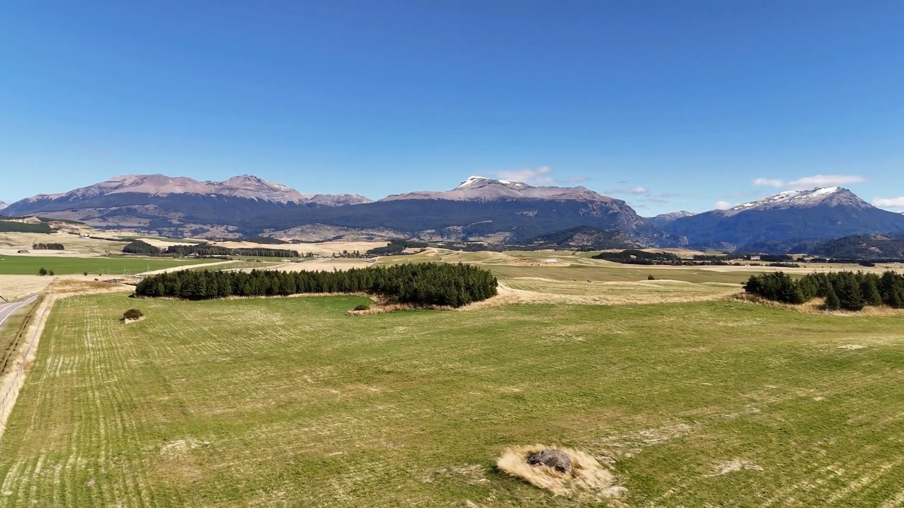

Head south out of Coyhaique and within a few kilometres the town gives way to meadows, fences and mountains. Then come forest, a high pass, a zigzag descent and, in the distance, the snowy spires of Cerro Castillo. The drive from Coyhaique to Cerro Castillo on the Carretera Austral is short, but it has enough stops to fill a whole day.
According to the Río Ibáñez council, Villa Cerro Castillo is 95 km from Coyhaique (other sources give 93 to 100 km, about 1 h 30 min by car), and according to Ruta de los Parques the road is fully paved. This guide follows the route from north to south: valleys, lookouts and lakes.
Valle Simpson: meadows just outside Coyhaique
The first stop is very close to town. According to Chile's regional development agency (Subdere), the Route 7 junction for Valle Simpson and Villa Frei is "15 kilometres south of the city of Coyhaique, on the way to Balmaceda airport". In 2015 the same note reported work on an 8 km asphalt road linking Valle Simpson and Villa Frei with Coyhaique.
Valle Simpson is a small rural area in the municipality of Coyhaique, with meadows and smallholdings looking out to the mountains. From here you can also take the road to Lake Elizalde and the Seis Lagunas circuit.

If you fly in, you will drive this stretch anyway: on 5 October 2026 Coyhaique opened the new terminal at Balmaceda Airport, about 50 minutes by car from town. More details in our guide on how to get to Coyhaique.
From El Blanco to Cerro Castillo National Park
Past Villa El Blanco, at the junction for Cerro Castillo, turn right and continue along the Carretera Austral. Soon you enter Cerro Castillo National Park, where, according to Ruta de los Parques, "it is common to see huemul deer by the side of the road". Drive calmly and don't stop on bends.
According to CONAF, the Carretera Austral crosses the park 64 km south of Coyhaique, and the ranger station is at Laguna Chiguay, km 57 of Route 7 South. To stretch your legs, the Laguna Chiguay trail is 2.5 km long, takes about 2 hours and is easy.

CONAF prohibits fires, pets and drones in the park. In autumn and winter, Ruta de los Parques advises watching out for early-morning frost on this road.
The Cuesta del Diablo lookout above Villa Cerro Castillo
According to Ruta de los Parques, the road climbs "to Portezuelo Ibáñez (1,200 m above sea level), the highest point of the whole route". It then drops down the Cuesta del Diablo to Villa Cerro Castillo.
At the top of that descent there is a lookout with a wooden railing. From there you can watch the Carretera Austral itself wind down in tight switchbacks into the broad Ibáñez River valley, with the Cerro Castillo massif behind. According to the Río Ibáñez council, the massif rises to 2,675 m, with hanging glaciers and a turquoise lagoon.
The lookout has no confirmed official name. Guides and tour operators call it "Mirador Cuesta del Diablo" or "Mirador Cerro Castillo". The Komoot platform places it at about 830 m above sea level.
Villa Cerro Castillo: hiking and onward travel
At the bottom of the descent lies Villa Cerro Castillo. If you have come to hike, read our guide to hiking in Cerro Castillo.
The village is also home to the Paredón de las Manos (Wall of Hands), a rock face about 25 m long with paintings "around 5,000 years old" attributed to the Tehuelche people, according to Ruta de los Parques.
From here, Route X-723 leads to Puerto Ingeniero Ibáñez, 37 km away according to the council, with views of Lago Tamango and the Ibáñez River falls. Read our guide to Puerto Ibáñez and the Ibáñez River falls.
Fuel: the Ruta de los Parques guide (2018) said there was no petrol station in the village, while the council's website (2026) says Villa Cerro Castillo "has service stations and ATMs". Check before you travel and, as CONAF advises, fill up before you set off.
Further south: turquoise lakes and roadworks
If you continue south on Route 7 beyond Villa Cerro Castillo, Ruta de los Parques says "you will see Laguna Verde and then the Dead Forest created by the eruption of the Hudson volcano in 1991".
The video below shows Lago Verde, 15 minutes from Villa Cerro Castillo: a turquoise lake where a glacial river forms a delta as it flows in, with snowy peaks behind.
Further south, the road is under construction. In 2021 the Ministry of Public Works (MOP) put out to tender the paving of 16 km of Route 7 South in the Laguna Verde–Alcantarilla Cascada sector, and in August 2026 BioBioChile reported that the El Manso bridge, part of the Laguna Verde–La Cascada contract, was 16% complete, with completion expected in April 2028. Ruta de los Parques (2018) described this stretch as gravel; that may have changed, so check conditions before you set off. To continue towards Lake General Carrera, read our Carretera Austral road trip guide.
Frequently asked questions
How far is it from Coyhaique to Villa Cerro Castillo?
95 km according to the Río Ibáñez council; other sources give 93 to 100 km, about 1 h 30 min by car.
Is the road from Coyhaique to Cerro Castillo paved?
Yes, according to Ruta de los Parques it is fully paved. South of Villa Cerro Castillo some stretches are under construction.
Where is the Cuesta del Diablo lookout?
At the top of the Carretera Austral's descent to Villa Cerro Castillo, after Portezuelo Ibáñez.
Can you see huemul deer along the way?
It is possible. According to Ruta de los Parques, in Cerro Castillo National Park "it is common to see huemul deer by the side of the road". Drive carefully.
A road worth driving again and again
This road looks different in every season, which is why it is so tempting to drive it again and again. If you would like a base of your own in Aysén, Inmobiliaria El Roble has two projects in the region, with legal advice throughout the purchase process and interest-free direct financing: Horizontes de Mañihuales, 4 plots of 0.53 to 1 ha on the Mañihuales River, with access by public road, 1 hour 10 minutes north of Coyhaique and 10 minutes from Villa Mañihuales, sold off-plan while SAG approval is obtained; and Parcelas Don Guillermo, on the Emperador Guillermo River, right on the Carretera Austral, where a single plot remains: B11, of 9,500 m². See our projects and watch more landscapes on our Patagonia videos page.
Sources
- Subdere, Valle Simpson–Villa Frei road, 2 Feb 2015
- Ruta de los Parques, Glaciers and Lakes of Aysén route, 2018
- CONAF, Cerro Castillo National Park, undated
- Komoot, View of Cerro Castillo and Carretera Austral Switchbacks, undated
- Turismo Río Ibáñez (municipal council), accessed 16 Nov 2026
- Chile.travel, trekking in Cerro Castillo, undated
- Ministry of the Interior, new Balmaceda Airport, 5 Oct 2026
- Infraestructura Pública, Laguna Verde–Alcantarilla Cascada tender, 10 Sep 2021
- BioBioChile, 26 Aug 2026